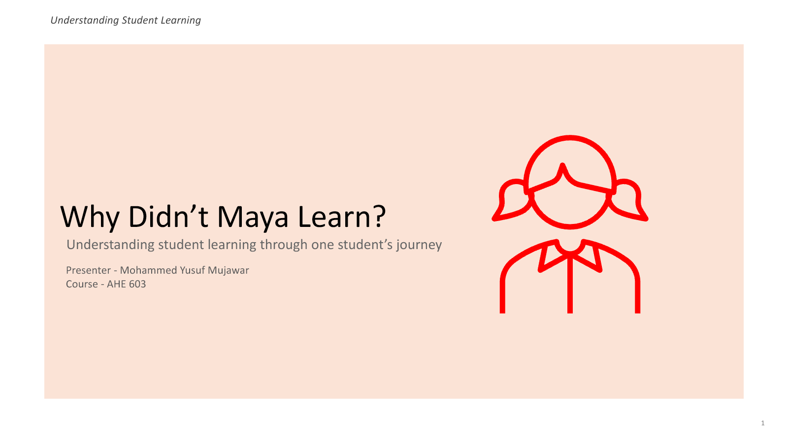

My approach to
college teaching.
A teaching portfolio by
Mohammed Yusuf Mujawar
This portfolio presents my approach to college teaching through learning principles, practical examples, course design, and reflection.
Understanding the concept
and its practical application.
The activities cover teaching preferences, student learning, and course design. For each activity, I discuss the original work and how the ideas could be applied in teaching.
Read my introduction →Selected teaching activities
My Teaching Style
This activity examines my teaching preferences and how they can influence the support I provide to students.
Explore activityPlanning Learning Goals and Outcomes
This course-planning activity develops a goal, objectives, and learning outcomes for a proposed Computer Algorithms course.
Explore activityPlanning a Java Class Session
This activity develops a 50-minute Java class plan using explanations, demonstrations, discussion, and an ungraded quiz.
Explore activity
Why didn’t
Maya learn?
My demonstration uses Maya’s case to examine a learning problem. She performs well on a test but cannot apply the same concept in a different situation. The presentation discusses possible barriers and teaching methods that could address them.
Explore the demonstration →11 slides · Recording to be addedEvaluating understanding
after an explanation
An explanation can introduce a concept, but students also need opportunities to use it. My reflections consider how practice and feedback can help me identify what students understand and where further support is needed.
Read the reflections →